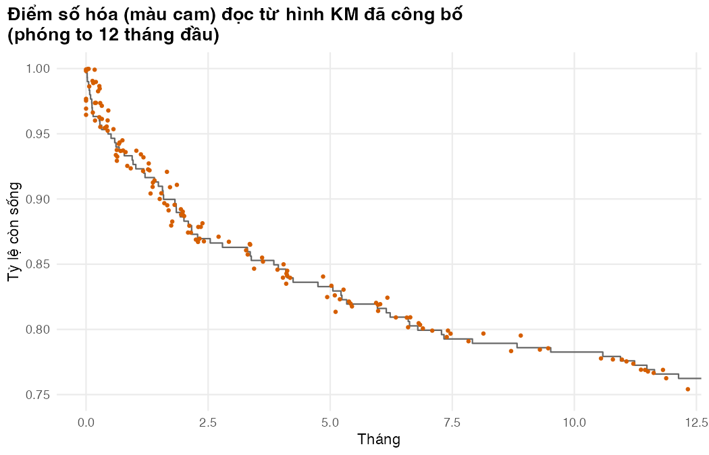

Bài 4: Tái tạo dữ liệu cá thể từ đường KM đã công bố và dùng HR
Khi chỉ có bài báo: dựng lại IPD theo nguyên lý thuật toán Guyot, kiểm tra nó, và áp tỷ số nguy cơ tức thời (HR) đúng cách
Vì sao bạn nên quan tâm?
Bạn được giao viết báo cáo chi phí-hiệu quả cho một gói chăm sóc sớm dành cho người bệnh lao/HIV tại một bệnh viện tỉnh. Bằng chứng mạnh nhất là CAMELIA ở Campuchia: 90 trong 329 người tử vong ở nhánh khởi động ARV muộn so với 59 trong 332 ở nhánh sớm, HR 0.62 (Blanc và c.s. 2011), nhưng bạn chỉ có bài báo, không có dữ liệu từng người. Áp HR sai thứ tự (xem mục “Dùng HR đã công bố”) làm lợi ích phình thêm 3.2 năm sống mỗi người; nếu định giá mỗi năm sống ở mốc 1 × GDP bình quân đầu người, phần phình đó tương đương khoảng 402,000,000 VNĐ, gần 76 tháng lương tối thiểu vùng I (Cục Thống kê (Bộ Tài chính) 2026; Chính phủ 2025). Bài này giúp bạn dựng lại dữ liệu từ hình đã công bố, kiểm tra nó, và dùng HR mà không thổi phồng lợi ích.
Mục tiêu học tập
Sau bài này, bạn có thể:
Giải thích nguyên lý thuật toán Guyot và vai trò của số người còn nguy cơ (number at risk).
Tái tạo dữ liệu cấp cá thể (IPD) từ điểm số hóa và kiểm tra chất lượng.
Áp một tỷ số nguy cơ tức thời (HR) đã công bố đúng thứ tự, và nhận ra khi nào HR hằng định phóng đại lợi ích.
Suy sai số chuẩn của log HR từ KTC hoặc giá trị p để đưa vào PSA.
Ý chính
Thuật toán Guyot nghịch đảo công thức KM để suy số tử vong và số kiểm duyệt từng khoảng từ đường KM đã công bố (Guyot và c.s. 2012).
Thiếu bảng số người còn nguy cơ, số sự kiện sai nhiều còn HR có thể trông ổn chỉ vì các sai số triệt tiêu (Bài tập 1).
Luôn kiểm tra dữ liệu tái tạo: số người còn nguy cơ, số sự kiện, KM chồng hình gốc, RMST, HR.
Áp HR lên nguy cơ, không lên xác suất (\(p_1 = 1 - (1-p_0)^{HR}\)), và lên nguy cơ của bệnh trước khi áp sàn tử vong nền.
HR hằng định có thể phóng đại lợi ích dài hạn: thử kịch bản HR giảm dần.
Nội dung
Khi chỉ có bài báo
Người làm mô hình thường chỉ có thử nghiệm đã công bố chứ không có IPD, nhất là khi nguồn lực hạn chế. Bài báo có hình KM, bảng số người còn nguy cơ và một HR với KTC 95%. Để chấm điểm phương pháp, ta “giả vờ” chỉ có hình KM của thử nghiệm mô phỏng, tái tạo, rồi so với dữ liệu gốc.
Nguyên lý thuật toán Guyot
Đầu vào là các điểm \((t_k, S_k)\) đọc từ hình bằng phần mềm số hóa, và số người còn nguy cơ \(n_j\) tại các mốc \(r_j\) dưới hình. Trong mỗi khoảng \([r_j, r_{j+1})\):
Đoán số người bị kiểm duyệt \(c_j\) và rải đều thời điểm kiểm duyệt.
Đi qua từng điểm số hóa. Số còn nguy cơ \(n_k\) bằng số đầu khoảng trừ người đã chết và đã bị kiểm duyệt trước \(t_k\); số tử vong là \[
d_k = \operatorname{round}\left\{ n_k \left(1 - \frac{S_k}{\hat S_{k-1}} \right) \right\},
\] với \(\hat S_{k-1}\) là KM tái tạo ngay trước điểm \(k\): công thức KM của Bài 1 giải ngược cho \(d\).
Tính số còn nguy cơ dự báo cuối khoảng, \(\hat n_{j+1} = n_j - \sum d_k - c_j\). Nếu khác \(n_{j+1}\) đã công bố, chỉnh \(c_j\) và lặp lại tới khi khớp.
Ở khoảng cuối, reconstruct_ipd() giả định không còn ai nguy cơ; thuật toán gốc dùng thêm tổng số sự kiện nếu có. Mã của module viết từ đầu theo nguyên lý của Guyot để dạy học, và cảnh báo khi một khoảng không khớp số người còn nguy cơ đã công bố. Cho phân tích thật, dùng gói IPDfromKM (Liu, Zhou, và Lee 2021) hoặc bản cài đặt đã kiểm định khác, và vẫn chạy các kiểm tra dưới đây.
flowchart LR A["Hình KM<br/>đã công bố"] --> B["Số hóa điểm<br/>(t, S)"] C["Bảng số người<br/>còn nguy cơ"] --> D B --> E["Làm sạch: sắp xếp,<br/>hồi quy đơn điệu"] E --> D["Nghịch đảo KM<br/>theo từng khoảng"] D --> F["IPD tái tạo"] F --> G["Kiểm tra: số còn nguy cơ,<br/>số sự kiện, KM chồng hình"] G --> H["Khớp mô hình,<br/>ước lượng HR"]
flowchart LR
A["Hình KM<br/>đã công bố"] --> B["Số hóa điểm<br/>(t, S)"]
C["Bảng số người<br/>còn nguy cơ"] --> D
B --> E["Làm sạch: sắp xếp,<br/>hồi quy đơn điệu"]
E --> D["Nghịch đảo KM<br/>theo từng khoảng"]
D --> F["IPD tái tạo"]
F --> G["Kiểm tra: số còn nguy cơ,<br/>số sự kiện, KM chồng hình"]
G --> H["Khớp mô hình,<br/>ước lượng HR"]
Sai số đọc có thể làm đường cong “đi lên” ở vài chỗ. Hồi quy đơn điệu (isotonic regression, isoreg()) lấy trung bình các điểm vi phạm; giá trị nhỏ nhất tích lũy (cummin) cũng cho đường đơn điệu nhưng kéo đường cong xuống một cách hệ thống.
Tái tạo tốt tới đâu
Từ 182 điểm số hóa và bảng số người còn nguy cơ mỗi 3 tháng, IPD tái tạo của nhánh chuẩn có 89 tử vong so với 91 ở dữ liệu gốc; hai đường KM cách nhau tối đa 0.013, RMST tới 30 tháng là 23.08 so với 23.03. Tái tạo cả hai nhánh, HR Cox là 0.56 (KTC 95%: 0.40–0.79), so với 0.55 (KTC 95%: 0.39–0.77) trên dữ liệu gốc. Phù hợp với đánh giá gốc: HR chỉ chính xác khi có số người còn nguy cơ hoặc tổng số sự kiện (Guyot và c.s. 2012).
Dùng HR đã công bố
Với nguy cơ tỷ lệ, \(h_1(t) = HR \cdot h_0(t)\), nên \(S_1(t) = S_0(t)^{HR}\) và \(p_1 = 1 - (1 - p_0)^{HR}\). HR tác động lên nguy cơ, không nhân thẳng vào xác suất (M02 Bài 2).
Thứ tự các bước. HR nhân với nguy cơ của bệnh (đường đã khớp), rồi mới áp sàn tử vong nền (Bài 3). Áp HR lên đường đã có sàn thì cả tử vong nền bị nhân với HR: nguy cơ của nhánh tăng cường rơi dưới mức nền suốt 540 tháng và lợi ích phình lên 9.3 năm, thay vì 6.1 năm khi làm đúng.
HR có đổi theo thời gian? Trong mô phỏng, chăm sóc tăng cường cứu một phần người bệnh nguy cơ cao ở giai đoạn đầu, nên về lâu dài nguy cơ hai nhánh gần nhau: HR thật là 0.61 ở năm đầu, 0.81 ở năm 10 và 0.99 ở năm 20. Làm đúng thứ tự, HR Cox 0.56 hằng định cho lợi ích 6.1 năm sống (không chiết khấu), khớp riêng từng nhánh 6.3, khớp chung 4.7, HR giảm dần (giữ tới năm 3, về 1 vào năm 10; giá trị minh họa) 4.6, so với 4.0 thật.
Một thử nghiệm chưa đủ để kết luận. HR Cox của thử nghiệm này mạnh hơn mức trung bình (0.61) trên 100 thử nghiệm lặp lại, nên mọi cách dựa vào nó cho lợi ích cao hơn bình thường. Trung bình trên các thử nghiệm đó: 5.1 năm với HR hằng định (khoảng 1.5 tới 9.8), 4.8 với khớp riêng, 4.2 với khớp chung, 4.0 với HR giảm dần. HR hằng định phóng đại lợi ích vì HR thật tiến dần về 1. Khớp chung sát giá trị thật ở mô phỏng này, nhưng đó là hệ quả cách ta sinh dữ liệu, không phải quy luật; năm HR về 1 là giả định cần hỏi chuyên gia.
Bất định của HR
Trên thang log, KTC 95% đối xứng quanh ước lượng, nên \(SE[\log HR] = (\log U - \log L)/(2 \times 1.96)\). Với HR khởi động điều trị ARV (ART) sớm so với muộn trong CAMELIA, 0.62 (KTC 95%: 0.44–0.86) (Blanc và c.s. 2011), sai số chuẩn là 0.171. Rút HR từ phân phối log-chuẩn với trung bình log -0.478 và độ lệch chuẩn đó cho lại khoảng 0.45–0.87, gần KTC gốc: đây là cách đưa HR vào PSA (M03). Chỉ có giá trị p thì xem Tierney và c.s. (2007). HR Cox trung bình của các thử nghiệm mô phỏng (0.61) gần HR của CAMELIA vì thế giới mô phỏng được neo vào tỷ lệ tử vong hai nhánh của CAMELIA (Bài 1), không phải vì ta tái lập thử nghiệm đó.
Thực hành
Nạp hàm, tham số, thử nghiệm; chọn mốc của bảng số người còn nguy cơ.
if (!isTRUE(l10n_info()[["UTF-8"]])) invisible(Sys.setlocale("LC_CTYPE", "en_US.UTF-8"))source("../_shared/R/helpers.R")source("../_shared/R/vn_data.R") # course-wide context, unit prices and life tablesource("code/model.R")suppressPackageStartupMessages({library(ggplot2)library(survival)library(flexsurv)})ps <-read_params("params/sim_truth.csv")pm <-read_params("params/model_inputs.csv")cfg <-read_params("params/lesson_settings.csv")ctx <-vn_context() # course-wide: discount rate, threshold, exchange rate, wagespr <-vn_prices() # course-wide unit prices (BHYT fees, tests, ART, bed-days)inp <-build_inputs(pm, ctx, pr) # decision-model inputs: module values + shared values and priceslt <-vn_lifetable("both") # WHO life table, Viet Nam 2023, both sexesstopifnot(abs(ctx$wtp - ctx$gdp_pc_vnd) <1) # the text prices life-years at 1 x GDP per capita (course-wide threshold)trial <-simulate_trial(ps, lt, seed = SEED_TRIAL)# times printed under the "published" figurerisk_times <-seq(0, ps$study_months - cfg$risk_table_step, by = cfg$risk_table_step)
Tạo “hình đã công bố”: điểm số hóa (hai góc mỗi bậc thang, cộng sai số đọc) và bảng số người còn nguy cơ.
# Pretend the trial is only available as a published figure: digitised KM points# (with reading errors) plus the numbers-at-risk tabled_soc <-endpoint_data(trial, "os", "soc")km_soc <-km_by_hand(d_soc$time, d_soc$status)digi_soc <-digitise_km(km_soc, cfg$digit_sd_time, cfg$digit_sd_surv, seed = SEED_DIGI[["soc"]])risk_soc <-risk_table(d_soc$time, risk_times)nrow(digi_soc)
[1] 182
head(risk_soc, 4)
time n_risk
1 0 300
2 3 258
3 6 244
4 9 235
fig_digi <-ggplot() +geom_step(data =data.frame(time =c(0, km_soc$time), surv =c(1, km_soc$surv)),aes(time, surv), colour ="grey40") +geom_point(data = digi_soc, aes(time, surv), colour = pal_course[2], size =0.8) +coord_cartesian(xlim =c(0, 12), ylim =c(0.75, 1)) +labs(x ="Tháng", y ="Tỷ lệ còn sống",title ="Điểm số hóa (màu cam) đọc từ hình KM đã công bố\n(phóng to 12 tháng đầu)") +theme_course()save_fig(fig_digi, "l04-digitised.png")

Điểm số hóa quanh đường KM gốc
Tái tạo IPD và kiểm tra: tổng số người, số còn nguy cơ tại mỗi mốc, số tử vong, khoảng cách KM.
rec_soc <-reconstruct_ipd(digi_soc, risk_soc)# Check 1: same number of people as the published totalc(n_published = risk_soc$n_risk[1], n_reconstructed =nrow(rec_soc))
n_published n_reconstructed
300 300
stopifnot(nrow(rec_soc) == risk_soc$n_risk[1])# Check 2: reconstructed numbers at risk match the published tablerisk_check <-data.frame(month = risk_times,published = risk_soc$n_risk,reconstructed =risk_table(rec_soc$time, risk_times)$n_risk)risk_check$diff <- risk_check$reconstructed - risk_check$publishedrisk_check
stopifnot(max(abs(risk_check$diff)) <=2)# Check 3: total deaths and the largest gap between the two KM curveskm_rec <-km_by_hand(rec_soc$time, rec_soc$status)grid <-seq(0, ps$study_months -2, by =0.1)gap_soc <-max(abs(km_at(km_rec, grid) -km_at(km_soc, grid)))c(deaths_true =sum(d_soc$status), deaths_reconstructed =sum(rec_soc$status), max_km_gap = gap_soc)
Áp HR lên nguy cơ đã khớp rồi mới áp sàn. Kiểm tra: cả hai nhánh mỗi tháng mất ít nhất bằng nguy cơ nền, còn thứ tự sai thì vi phạm; hàm ly_gains_from_ipd() cho cùng kết quả. Bảng so các cách mang hiệu quả ra ngoài thời gian theo dõi.
# Only the comparator curve and an HR are published. Proportional hazards: multiply the# FITTED hazard of standard care by the HR, then apply the background floor LAST.n_months <- pm$horizon_years *12months <-0:n_monthsh_bg <-bg_hazard_monthly(pm$age_cohort, n_months, lt, pm$smr_bg)hr_rec <- hr_tab["reconstructed", "HR"]S_fit_soc <-fit_curve(ln_rec, months) # fitted log-normal, no floor yetS_soc <-add_bg_max(S_fit_soc, h_bg)S_enh_ph <-add_bg_max(apply_hr(S_fit_soc, hr_rec), h_bg)# Check: in every month the hazard of BOTH curves is at least the background hazardstopifnot(all(-diff(log(S_soc)) >= h_bg -1e-12), all(-diff(log(S_enh_ph)) >= h_bg -1e-12))# The wrong order, for contrast: HR on a curve that already contains the floor. It# multiplies the background hazard by the HR too, so the check above must fail for it.S_enh_wrong <-apply_hr(S_soc, hr_rec)stopifnot(any(-diff(log(S_enh_wrong)) < h_bg -1e-12))months_below <-sum(-diff(log(S_enh_wrong)) < h_bg -1e-12)# Scenario: the effect fades, HR at hr_rec until year hr_wane_start, then linearly to 1hr_t <-hr_waning((months[-1] -0.5) /12, hr_rec, pm$hr_wane_start, pm$hr_wane_end)S_enh_wane <-add_bg_max(apply_hr_monthly(S_fit_soc, hr_t), h_bg)# Alternatives: one log-normal per arm, and one joint log-normal with arm as covariateln_enh <-flexsurvreg(Surv(time, status) ~1, data = rec_enh, dist ="lnorm")S_enh_fit <-add_bg_max(fit_curve(ln_enh, months), h_bg)ln_joint <-flexsurvreg(Surv(time, status) ~ arm, data = rec_both, dist ="lnorm")S_joint <-lapply(ARMS, function(g) add_bg_max(fit_curve(ln_joint, months, newdata =data.frame(arm = g)), h_bg))truth <-true_curves(ps, lt, n_months, seed = SEED_TRUTH)gain <-c(hr_constant =area_years(S_enh_ph) -area_years(S_soc),hr_waning =area_years(S_enh_wane) -area_years(S_soc),separate_fit =area_years(S_enh_fit) -area_years(S_soc),joint_fit =area_years(S_joint[[2]]) -area_years(S_joint[[1]]),hr_wrong_order =area_years(S_enh_wrong) -area_years(S_soc),truth =area_years(truth$os[truth$arm =="enh"]) -area_years(truth$os[truth$arm =="soc"]))round(gain, 2)
# Check: the function used for the replicate trials gives the same numbersgain_fn <-ly_gains_from_ipd(rec_soc, rec_enh, months, h_bg, pm$hr_wane_start, pm$hr_wane_end)stopifnot(abs(gain_fn[["hr_constant"]] - gain[["hr_constant"]]) <1e-9,abs(gain_fn[["hr_waning"]] - gain[["hr_waning"]]) <1e-9,abs(gain_fn[["separate"]] - gain[["separate_fit"]]) <1e-9,abs(gain_fn[["joint"]] - gain[["joint_fit"]]) <1e-9)# Prose claims: a fading effect gives a smaller gain than a constant one, and the wrong order# gives a larger gain than the right onestopifnot(gain[["hr_waning"]] < gain[["hr_constant"]], gain[["hr_wrong_order"]] > gain[["hr_constant"]])# The true HR is not constant: hazard ratio by year computed from the true curvesyr <-1:20H_true <-function(g) -log(truth$os[truth$arm == g][yr *12+1] / truth$os[truth$arm == g][(yr -1) *12+1])hr_by_year <-data.frame(year = yr, hr =H_true("enh") /H_true("soc"))hr_by_year[c(1, 2, 3, 5, 10, 20), ]
# Prose claims: a constant HR overstates the gain on average; this trial's HR is stronger# than the average HR over trials; the joint fit is close to the truth in this simulationstopifnot(rep_gain["hr_constant", "mean"] > gain[["truth"]], hr_rec < rep_gain["hr", "mean"],abs(rep_gain["joint", "mean"] - gain[["truth"]]) <0.5)# The simulated world is anchored to CAMELIA, so the average Cox HR over replicate trials# should be close to the published HR (prose claim; tolerance 0.05)stopifnot(abs(rep_gain["hr", "mean"] - pm$hr_camelia) <0.05)
Suy sai số chuẩn của log HR từ KTC, rút 1,000 HR cho PSA, và so áp HR qua nguy cơ với nhân thẳng vào xác suất.
# A published HR with its 95% CI: recover the SE of log(HR), then draw HRs for PSAhr_row <-attr(pm, "table")[attr(pm, "table")$name =="hr_camelia", ]se_cam <-se_log_hr(hr_row$low, hr_row$high)se_cam
# Applying an HR to a monthly probability: through the hazard, not by multiplicationp0 <-c(cfg$p_toy_low, cfg$p_toy_mid, cfg$p_toy_high)data.frame(p0 = p0, correct =1- (1- p0)^pm$hr_camelia, naive = p0 * pm$hr_camelia)
Số hóa từ tệp PDF gốc, phóng to; lưu điểm số hóa và bảng số người còn nguy cơ thành CSV vì đó là dữ liệu thô.
Có tổng số sự kiện thì dùng nó cho khoảng cuối.
Lỗi thường gặp
Tái tạo không có bảng số người còn nguy cơ rồi tin số sự kiện và HR (Bài tập 1).
Nhân HR vào xác suất (\(p_0 \times HR\)) thay vì đi qua nguy cơ.
Áp HR lên đường đã có sàn tử vong nền: lợi ích phình lên 9.3 năm so với 6.1 năm.
Áp HR hằng định cho trọn đời, hoặc dùng HR từ quần thể khác (ví dụ CD4 rất thấp) mà không bàn tính chuyển giao.
Bài tập
Bài tập 1 (dễ). Tái tạo cả hai nhánh khi chỉ biết tổng số người lúc đầu (không có bảng số người còn nguy cơ). So số tử vong và HR Cox với lần tái tạo đầy đủ.
Lời giải
Không có bảng, kiểm duyệt bị rải đều nên số còn nguy cơ ở giai đoạn đầu bị đánh giá thấp và cần ít tử vong hơn: 74 so với 91 thật (nhánh chuẩn), 40 so với 54 (nhánh tăng cường). Hai sai số cùng chiều nên HR gần như không đổi (0.54 (KTC 95%: 0.37–0.80) so với 0.56 (KTC 95%: 0.40–0.79)). Đó không phải bằng chứng HR đáng tin: số sự kiện, nguy cơ tuyệt đối và độ rộng KTC đều sai, và HR chỉ “trông ổn” khi các sai lệch triệt tiêu.
# Exercise 1: reconstruction with no risk table (only the total at time 0), both arms# reconstruct_ipd() warns here: without a risk table the last interval cannot be matched exactly.rec_norisk <-reconstruct_ipd(digi_soc, risk_soc[1, ])rec_norisk_enh <-reconstruct_ipd(digi_enh, risk_enh[1, ])km_norisk <-km_by_hand(rec_norisk$time, rec_norisk$status)c(deaths =sum(rec_norisk$status),max_km_gap =max(abs(km_at(km_norisk, grid) -km_at(km_soc, grid))),rmst =rmst_km(km_norisk, cfg$rmst_tau))
# Prose claim: without the table both arms lose deaths (the biases point the same way)stopifnot(all(deaths_tab["without_table", ] < deaths_tab["true", ]))round(rbind(with_table = hr_tab["reconstructed", ], without_table = hr_norisk), 3)
# Prose claim: the HR hardly moves (the two biases cancel), log HR within 0.1stopifnot(abs(log(hr_norisk[1]) -log(hr_tab["reconstructed", "HR"])) <0.1)
Bài tập 2 (trung bình). So ba kiểu số hóa: cẩn thận, cẩu thả (sai số ngẫu nhiên sd 0.02) và lệch hệ thống (mọi điểm đọc thấp hơn thật 0.01). Khoảng cách lớn nhất và khoảng cách có dấu trung bình giữa hai đường KM thay đổi ra sao?
Lời giải
Với sai số ngẫu nhiên lớn gấp 5 lần, khoảng cách lớn nhất là 0.013 (cẩn thận: 0.013) và khoảng cách có dấu trung bình chỉ 0.002, vì hồi quy đơn điệu trung bình hóa sai số ngẫu nhiên. Sai lệch hệ thống không được bù: khoảng cách có dấu trung bình là -0.008, xấp xỉ mức lệch đã đặt.
# Exercise 2: three kinds of reading error, same reconstruction, same risk table:# careful (sd 0.004), sloppy (random error with sd 0.02) and a systematic offset# reconstruct_ipd() may warn for the sloppy and offset readings (one interval misses the# published number at risk by one person): reading errors make an exact match impossible.rec_noisy <-reconstruct_ipd(digitise_km(km_soc, cfg$digit_sd_time, cfg$digit_sd_surv_sloppy,seed = SEED_DIGI[["sloppy"]]), risk_soc)digi_off <- digi_socdigi_off$surv <- digi_off$surv - cfg$digit_offset # every point read slightly too lowrec_off <-reconstruct_ipd(digi_off, risk_soc)read_err <-data.frame(reading =c("careful", "sloppy (random)", "offset (systematic)"), max_gap =NA, mean_signed_gap =NA, deaths =NA)for (i in1:3) { rr <-list(rec_soc, rec_noisy, rec_off)[[i]] kk <-km_by_hand(rr$time, rr$status) read_err$max_gap[i] <-max(abs(km_at(kk, grid) -km_at(km_soc, grid))) read_err$mean_signed_gap[i] <-mean(km_at(kk, grid) -km_at(km_soc, grid)) # bias: sign matters read_err$deaths[i] <-sum(rr$status)}read_err
# Prose claims: random error leaves the KM about unbiased, a systematic offset does notstopifnot(abs(read_err$mean_signed_gap[2]) <abs(read_err$mean_signed_gap[3]), read_err$mean_signed_gap[3] <0)
Bài tập 3 (khó). CAMELIA báo cáo giá trị p của so sánh sống còn. Suy sai số chuẩn của log HR từ HR và giá trị p (kiểm định Wald), rồi so với cách dùng KTC.
Lời giải
Với kiểm định Wald, \(SE = |\log HR| / z\), \(z\) là phân vị chuẩn ứng với giá trị p hai phía. Hai cách cho 0.174 và 0.171: gần nhau. Chênh lệch nhỏ do làm tròn và do giá trị p có thể đến từ kiểm định log-rank chứ không phải Wald.
# Exercise 3: SE of log(HR) from the HR and its p-value, compared with the CI routez <-qnorm(1- pm$p_camelia /2)c(se_from_p =abs(log(pm$hr_camelia)) / z, se_from_ci = se_cam)
se_from_p se_from_ci
0.1739716 0.1709617
Tài liệu tham khảo
Đọc thêm: Guyot và c.s. (2012), Liu, Zhou, và Lee (2021) (gói R IPDfromKM), Tierney và c.s. (2007) (suy HR từ số liệu tóm tắt).
Blanc, François-Xavier, Thim Sok, Didier Laureillard, Laurence Borand, Claire Rekacewicz, Eric Nerrienet, Yoann Madec, và c.s. 2011. “Earlier versus later start of antiretroviral therapy in HIV-infected adults with tuberculosis”. New England Journal of Medicine 365 (16): 1471–81. https://doi.org/10.1056/NEJMoa1013911.
Cục Thống kê (Bộ Tài chính). 2026. “Họp báo công bố tình hình kinh tế – xã hội quý IV và năm 2025”. 5 Tháng Giêng 2026. https://www.nso.gov.vn/?p=59699.
Guyot, Patricia, A. E. Ades, Mario J. N. M. Ouwens, và Nicky J. Welton. 2012. “Enhanced secondary analysis of survival data: reconstructing the data from published Kaplan-Meier survival curves”. BMC Medical Research Methodology 12: 9. https://doi.org/10.1186/1471-2288-12-9.
Liu, Na, Yanhong Zhou, và J. Jack Lee. 2021. “IPDfromKM: reconstruct individual patient data from published Kaplan-Meier survival curves”. BMC Medical Research Methodology 21: 111. https://doi.org/10.1186/s12874-021-01308-8.
Tierney, Jayne F., Lesley A. Stewart, Davina Ghersi, Sarah Burdett, và Matthew R. Sydes. 2007. “Practical methods for incorporating summary time-to-event data into meta-analysis”. Trials 8: 16. https://doi.org/10.1186/1745-6215-8-16.
Kịch bản video (~13 phút)
#
Slide
Lời giảng chính
Hình/Code
1
Khi chỉ có bài báo
Hình KM, bảng số người còn nguy cơ, HR: ba nguồn thông tin
Hình KM Bài 1
2
Số hóa
Đọc hai góc mỗi bậc thang; sai số đọc
figs/l04-digitised.png
3
Nghịch đảo KM
d = n(1 − S_k/S_{k−1}); chỉnh số kiểm duyệt để khớp bảng
Công thức, sơ đồ
4
Làm sạch
Hồi quy đơn điệu thay vì cummin
Chunk l04-published
5
Kiểm tra tái tạo
Số còn nguy cơ, số sự kiện, khoảng cách KM; cảnh báo khi không khớp
Chunk l04-reconstruct
6
Chồng hình
KM tái tạo gần trùng KM gốc; tham số, RMST
figs/l04-reconstructed.png
7
HR trên dữ liệu tái tạo
HR gần dữ liệu gốc khi có bảng
Chunk l04-both-arms
8
Áp HR đúng thứ tự
S^HR trên đường chưa có sàn, sàn nền áp sau; không nhân xác suất
Chunk l04-apply-hr
9
HR thay đổi theo thời gian
HR thật về gần 1; HR hằng định phóng đại; kịch bản giảm dần
figs/l04-hr-time.png
10
Sai số mẫu
Lặp lại nhiều thử nghiệm: trung bình và khoảng của lợi ích